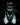

|

|

|
- About this game
- System Requirements
- Game controls and Hints
- Troubleshooting
- Contacts & Support
About this game
Hey, many thanks for downloading Savage Wheels.
Savage Wheels is a 2D car crashing arcade game, where up to 4 vehicles take part in a deadly tournament.The goal is to eliminate the other derby contestants. Player may choose from a variety of vehicles, each with it's unique characteristics: speed,acceleration,armor,damage and driver. Players can collect various bonuses to increase their speed and damage or to fix their car. All drivers have their background stories, which are uncovered in the campaign mode. Gameplay modes includes a campaign, hot-seat mode between two players or melee mode where other vehicles are controlled by fearsome game AI ;-).
System Requirements
Savage Wheels will need at least:
Windows XP/Vista or
Linux with X11 and SDL installed
200MHz CPU or better ;)
32MB RAM
Video Card able to display 640x480x16bit
Sound Card
2-Button Mouse
Keyboard
As you may see the requirements are as low as they can get ;)
Game controls and Hints
Player 1 keys:
arrow keys to move UP (accelerate up) LEFT (turn left) RIGHT (turn right) DOWN (back gear) RIGHT CTRL - to place landmines DELETE - self destructionPlayer 2 keys:
R (accelerate up) D (turn left) G (turn right) F (back gear) LEFT CTRL - to place landmines TAB - self destruction
The ingame keys are also configurable within the bindings.xml file in the game folder.
You can change the terrain by pressing F5.
During the game you can also turn on/off change the music with the F4 key.
To turn on/off the shadows use F9 key.
(Linux Only) To toggle on/off fullscreen mode use the F11 key.

The blue bar is your armour(hitpoints) indicator. Should it fall below half its size
your vehicle should look smashed.
The red bar is your anger indicator. The more anger you get the more damage your vehicle will do.
The white numbers are your frags.
Some hints and facts: - If you self destruct, you will loose a frag.
- Any inactive vehicle is to be destroyed within 5-7 seconds.
- Inactive destruction does not take frags.
- Landmines are pretty useful if there's an enemy behind your back.
- You will not suffer any damage if you run over a landmine you
put.
- To do full damage hit enemies with your highest speed.
- If you hit an enemy at low speed you will not do your full 'anger' damage.
When you run over a bug, you get a specific bonus.A good hint is always
to run for a frag, or anger giving bug. Below is a table describing the bonuses.

+1 frag. 
Gives anger.

Repairs your vehicle.

Speeds up your vehicle.  Gives +3 Landmines.
Troubleshooting and Q&A
1. Game sound does not work on Linux.
Due to a common problem on Linux systems by default the game tries to initialize it's sound via ALSA driver. Try to start the game with a command line parameter sw.exe -snd_default instead.
2. The game crashes on Linux when I start playing.
Try to start the game with command line parameter sw.exe -snd_22khz
3. The game always starts in a window on Linux.
Yes. Due to some bugs (probably in the display drivers of some video cards) the game always starts in a window on Linux installations. To force the game to start in fullscreen use sw.exe -force-fullscreen
4. How can I start the game in a window on a Windows machine ?
To start in a window use the command line parameter sw.exe -wnd
5. I get an error message ./savagewheels: error while loading shared libraries: libfmod-3.75.so
The FMod shared object library responsible for sound and music was not found. Try to specify the LD_LIBRARY_PATH environment variable before starting the game, i.e., export LD_LIBRARY_PATH=.:$LD_LIBRARY_PATH. The shared object file libfmod-3.75.so should already be available within the game directory.
6. The game crashes every time I start it.
Try to start the game with software video mode using sw.exe -sw. If that doesn't work ...well, that's bad karma ;) Anyway, check the debug.html log file in your game folder for some additional info. Report the problem with some details on the issues page.
Contact & Support
Official page: Savage Wheels Please report bugs or errors on the issues page KenamicK Entertainment: www.kenamick.com
Savage Wheels is powered by:
2003-2010 © KenamicK Entertainment